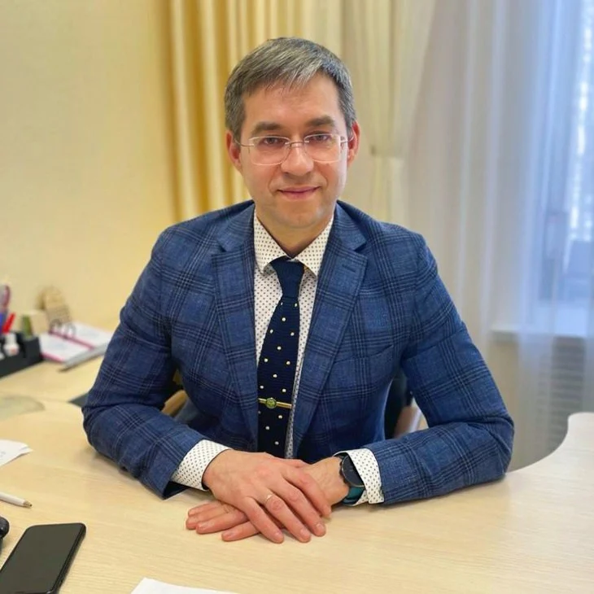

Олег Нуриханович,
Как санаторию, который лечит с 1972 года, получать гостей из коротких роликов, а не только из рекламы
Лично Олегу Нурихановичу. Игорь Ильин, «Бизнес по-русски»

Лично Олегу Нурихановичу. Игорь Ильин, «Бизнес по-русски»
Где Вы сейчас
В Вашей группе ВКонтакте 77 282 человека. Свои воды и грязи, лечение взрослых и детей от четырёх лет, больше двадцати врачей. Своего канала с видео нет, и гости снимают Вас сами: первый день дневника Натальи Мусиной из Нижне-Ивкино на YouTube посмотрели 25 589 раз. Люди ищут, как у Вас лечат, и узнают это от гостьи, а не от врача.
Гостей из других регионов Вы зовёте рекламой в поиске Яндекса. Я сам попал на Ваш сайт по такому объявлению. Реклама приводит людей, пока за неё платят.
Числа сняты 10.11.2026: группа vk.com/nizhne_ivkino, YouTube, описание группы.
Цель
Человек выбирает, куда поехать лечиться, и листает короткие ролики. ВКонтакте показывает клипы не только подписчикам группы, а всем, кому они интересны: у ВК Клипов 3 млрд просмотров в день. Он видит, как Ваш врач за минуту рассказывает, как проходит день в санатории, и в конце слышит, куда звонить.
Путёвка на «Лечебную» программу стоит от 71 500 ₽ за 10 дней. Одна такая путёвка стоит в семь раз больше, чем десять роликов, которые я предлагаю ниже.
Как поймём, что вышло: под каждым роликом ссылка с меткой, а при брони вопрос «откуда о нас узнали». Через месяц видно, какие ролики привели звонки, и таких делаем больше.
ВК Клипы - vk.ru/press, 02.12.2025. Путёвка - Ваш прейскурант n-ivkino.ru/tseny: 7 150 ₽ в сутки, одно место в двухместном номере.
Про Instagram
С 1 сентября 2025 года реклама в Instagram запрещена. Ролик, где врач рассказывает о санатории и зовёт бронировать, - это реклама, и отвечает за неё сам санаторий. Поэтому в Instagram я ролики не выкладываю, ссылок на него и его значка в роликах нет.
Ваши будущие гости и так во ВКонтакте: там Ваша группа на 77 282 человека. Ролики идут в ВК Клипы, Rutube, Дзен и Одноклассники. YouTube и Telegram - только по Вашему слову.
Врача снимаем по закону о медицинской рекламе: предупреждение о противопоказаниях на экране весь ролик, никаких обещаний вылечить и историй «мне помогло». Гости рассказывают о природе, номерах и кухне.
Запрет - ч. 10.7 ст. 5 закона «О рекламе», действует с 01.09.2025. Предупреждение - ч. 7 ст. 24 того же закона.
Как это работает у нас
На YouTube-канале «Бизнес по-русски» 3 920 подписчиков (10.11.2026). Эти два ролика посмотрели в десятки и сотни раз больше людей: их показали тем, кто о нас ещё не знал.
Что предлагаю
10 готовых роликов за неделю: видео, обложка и подпись с призывом позвонить
Мне нужно одно Ваше видео, где говорит врач или гость: интервью, экскурсия, ответы на вопросы, хотя бы на 20 минут. Если такого нет, пришлю вопросы, и Ваш врач за час запишет ответы на телефон.
Через месяц смотрим на брони по меткам и договариваемся по справедливости, как идти дальше.
Чего не обещаю: число просмотров и броней. Обещаю ролики, в которых понятно, куда звонить, и честный счёт того, что они принесли.